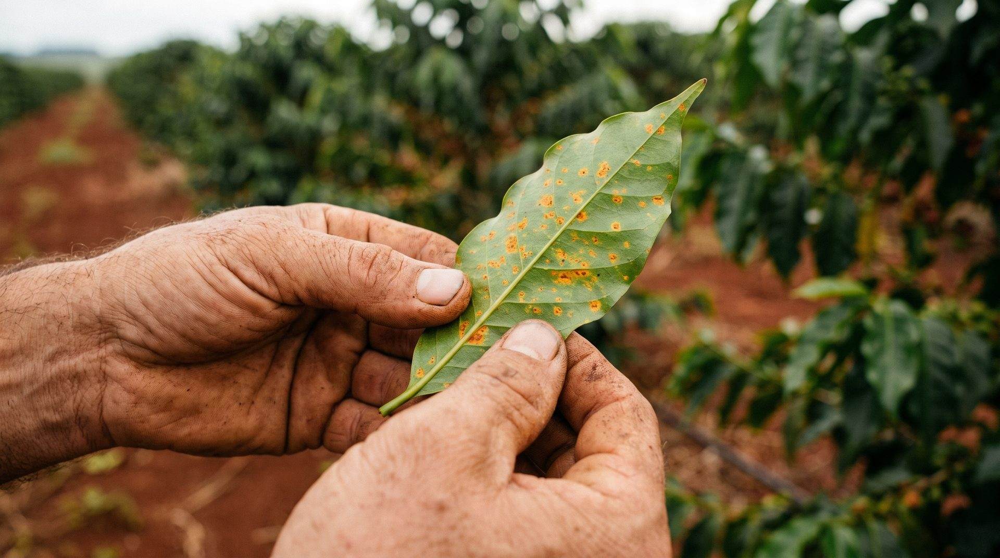

00Agronomia no WhatsApp
Manda
a foto
A folha, o áudio, o pin. A Stevi diz o que vê, de onde tirou, e onde ela para.
Falar com a SteviProdutorter, 3 set · 08:11

que que é isso? tá se alastrando
Stevi08:12
Pela foto, tem muita cara de ferrugem do cafeeiro — confiança média. Pra confirmar, uma foto do verso da folha ajuda: é onde saem as pústulas.
01O que ela lê
Você larga o pin
uma vez. Ela devolve
a lavoura em um cartão.
Da foto, a praga ou a doença, e o quanto ela confia no que viu.
Do áudio, a pergunta transcrita e respondida por escrito.
Do pin, o solo, o clima do ponto, o calendário sanitário e o vigor por satélite.
SteviCartão da lavouraqua, 4 set · 07:40
−21.42, −45.94Sul de Minas · o ponto do pin
| Leitura | Valor | Fonte |
|---|---|---|
| Solo | Argiloso · pH 5,2 · ácido | SoilGrids |
| Pulverizar | Pode · ΔT 6,5 °C · 7 km/h | Open-Meteo |
| Calendário | Vazio sanitário · soja | Portaria 1.579/26 |
| Vigor | NDVI 0,62 · vigorosa | Sentinel-2 30/08 |
Fontes consultadas na hora em que o pin chega. Leituras aproximadas.
02Antes de acontecer
Mínima de 1,2 °C prevista pra madrugada
1,2 °C
Mínima prevista pra madrugada de qua, 4 set, no ponto do pin — abaixo de 3 °C, risco de geada. Aviso mandado na véspera, às 22:00. Ninguém pediu.
SteviAlerta de geadater, 3 set · 22:00
Alerta de geada: a previsão pro ponto da sua fazenda indica mínima de 1,2 °C na madrugada de 04/09 — geada provável na sua região. Vale proteger mudas e talhões baixos e confirmar com fontes locais (INMET).
Previsão horária do ponto: Open-Meteo. Ela olha todo dia e avisa na véspera.
03Onde ela para
Não receita. Não inventa. Mostra a fonte.
- Não receita.
- Produto e dose são ato do engenheiro agrônomo, no receituário. Ela para nessa linha de propósito.
- Não inventa.
- Sem base sólida, diz que não sabe e manda pro agrônomo.
- Mostra a fonte.
- Cada frase diz de onde veio. Dá pra conferir.
04Para cooperativas e revendas
O dado é do produtor.
A cooperativa vê
o que ele autorizar.
O cooperado manda a foto pra Stevi, no WhatsApp que já usa.
O técnico recebe a triagem pronta, com o caderno de aplicações montado, e visita quem precisa primeiro.
Nada sai do Brasil. Um número, um cartaz no balcão.
05Perguntas · Antes da primeira foto
Antes da
primeira foto.
- É de graça?
- É. No beta sou gratuita. Quando quiser ir além da triagem, te conecto a um agrônomo.
- E se a internet for ruim?
- Sem problema. Respondo em texto, que é leve. Funciona em conexão de campo.
- E os meus dados?
- Guardo o mínimo: o pin e o histórico. Peço permissão uma vez. “Apaga meus dados” funciona.